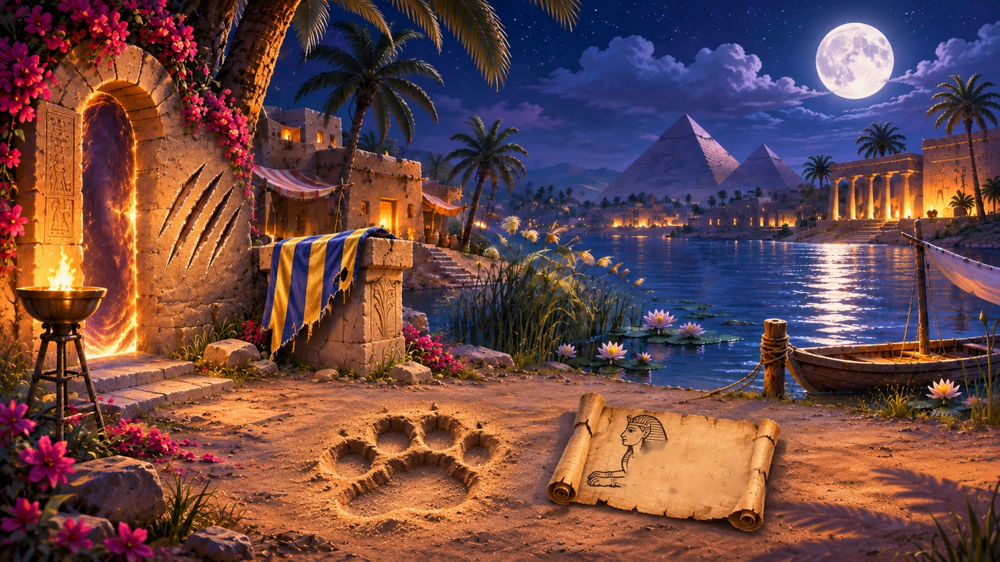

Ночная тайна Нила
⌂ Карта



Лада вышла из портала… А где друзья?
Улики 0/4
Кто напал на деревню?
Вспомни след, убор и рисунок на папирусе.

Лада вышла из портала… А где друзья?
Вспомни след, убор и рисунок на папирусе.